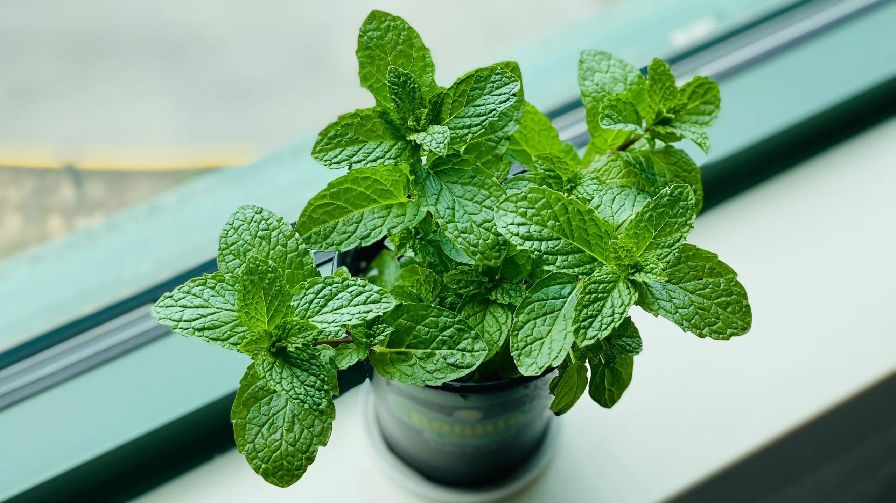

Hierbabuena
Mentha spicata

Descripción
La Hierbabuena es una planta aromática muy apreciada en Nicaragua por su aroma fresco y mentolado. Es una hierba perenne de crecimiento vigoroso que puede alcanzar hasta 60 cm de altura. Sus hojas verdes brillantes tienen bordes dentados y desprenden un aroma característico al tocarlas.
Se cultiva fácilmente en macetas o directamente en el suelo, siendo una de las plantas medicinales más populares en los hogares nicaragüenses.
Ubicación en Nicaragua
Se encuentra comúnmente en jardines, huertos y zonas rurales de los siguientes departamentos:
- Managua
- Masaya
- Matagalpa
- Jinotega
- Granada
Datos Curiosos
- Se propaga principalmente por esquejes y crece rápidamente.
- El aroma proviene del aceite esencial mentol.
- Puede crecer en casi cualquier tipo de suelo.
- Usada desde la antigüedad por griegos y romanos.
- Produce pequeñas flores blancas o rosadas en espigas.
- Una planta puede expandirse considerablemente en poco tiempo.
Beneficios y Usos
- Digestivo: Alivia indigestión, gases y cólicos estomacales.
- Respiratorio: Descongestiona vías respiratorias.
- Refrescante: Usada en bebidas típicas nicaragüenses.
- Culinario: Complemento aromático en ensaladas y platos.
- Repelente: Mantiene alejados insectos del hogar.
- Bucal: Mejora el aliento y la salud dental.